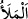

32. Onlar arasından kendilerine: “Allah’a kulluk edin. Sizin O’ndan başka bir
ilâhınız yoktur. Hâlâ Allah’tan korkmaz mısınız?” (mesajını ileten) bir peygamber
gönderdik.
“Onlar arasından” neseb bakımından onlardan olan Hûd’u “kendilerine: “Allah’a
kulluk edin. Sizin O’ndan başka bir ilâhınız yoktur. Hâlâ Allah’tan korkmaz mısınız?”
(mesajını ileten) bir peygamber gönderdik.” Yâni onlara peygamberin lisânıyla
‘Sadece Allah’a kulluk edin. Çünkü sizin O’ndan başka ilâhınız yoktur…’ dedik.
Bahru’l-ulûm’da der ki: “Siz Allah’a ortak mı koşarsınız? Şirk koşmanızdan dolayı
onun azâbından korkmaz mısınız?” Şu halde şirk koşmanın ve korkmamanın ikisi de
reddedilmiştir.
Onlara gönderilen Hûd (a.s.)’dı. Yoksa önceki âyetteki “nesil” kelimesi ile Âd ve
Semûd kasdedilmek sûretiyle onlara peygamber gönderilen Hûd ve Sâlih (a.s.) değildi.
Çünkü rasûl, mürsel/gönderilmiş anlamındadır. Onun için “Biz senin Rabbinin
elçileriyiz” (Tâhâ, 20/47) âyetinde olduğu gibi makama göre tesniye ve cem‘ yapılması
gerekir.
__WORD__ Böylece seni … bir ümmete gönderdik.” (er-Ra’d, 13/30) âyeti ve
benzerlerinde olduğu gibi “__WORD__ (nesil)” kelimesi, göndermenin yeri olarak ifâde
edilmiştir. “__WORD__ Andolsun ki, Nuh’u kavmine gönderdik” (el-
Mü’minûn, 22/23) âyetinde olduğu gibi onun için varılacak bir yer (gâye, hedef) yoktur.
Bu, daha işin başından onlara gönderilen kimsenin kendi mekânları dışından
gelmediğini, bilakis kendi aralarında yetiştiğini bildirmek içindir.
33. Onun kavminden, kâfir olup ahirete ulaşmayı inkâr eden ve dünya hayatında
kendilerine refah verdiğimiz varlıklı kişiler: “Bu, sadece sizin gibi bir insandır;
sizin yediğinizden yer, sizin içtiğinizden içer.” dediler.
“Onun kavminden, kâfir olup âhirete ulaşmayı” yâni tekrar diriltilip (ba‘s) mahşerde
toplanarak (haşr) âhirete varmayı ya da âhirette olacak hesap, sevab ve ceza ile
karşılaşmayı “inkâr eden ve” mal ve evlad çokluğu ile “dünya hayatında kendilerine
refah” nimet ve genişlik “verdiğimiz varlıklı kişiler” Yâni kavminin kâfir eşrâfı
peşlerinden gelenlere onları yoldan çıkarmak üzere şöyle dediler:
Râğıb der ki: “__WORD__ bir görüşte birleşen topluluk demektir ki onlar gözleri korkuyla,
insanları haşmet ve parlaklıkla doldururlar.” İleri gelen o kimseler yerilmek üzere küfür
ile vasfedilmiştir.